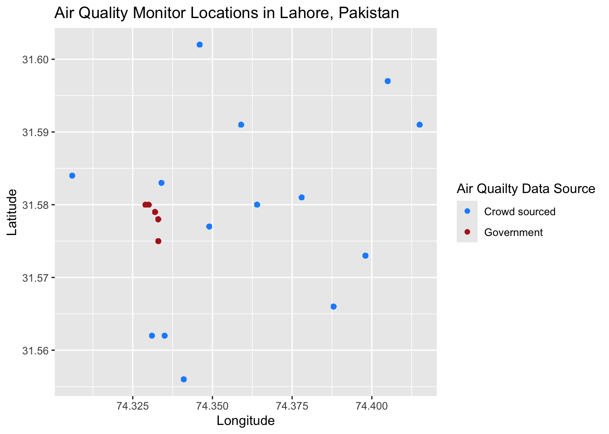

(The case study in this exercise is based on reality, but does not include actual observational data.)
In this exercise we will look at a case study concerning air quality in South Asia. The World Health Organization estimates that air pollution kills an estimated seven million people per year, due to its effects on the cardiovascular and respiratory systems. Out of the 40 most polluted cities in the world, South Asia is home to 37, and Pakistan was ranked to contain the second most air pollution in the world in 2020 (IQAIR, 2020). In 2019, Lahore, Pakistan was the 12th most polluted city in the world, exposing a population of 11.1 million people to increased mortality and morbidity risks.
In this exercise, you are given two datasets from Lahore, Pakistan and are asked to compare the two different data collection strategies from this city. These data are:
Crowd-sourced data from air quality monitors located in people’s homes. These data are voluntarily collected by individual households who choose to install a monitor in their home and upload their data for public access.
Official government data from monitors installed by government officials at selected locations across Lahore. There have been reports that government officials strategically locate monitors in locations with cleaner air in order to mitigate domestic and international pressure to clean up the air.
Note
All data for EDS 222 will be stored on the Taylor server, in the shared /courses/eds-222/data/ directory. Please see material from EDS 214 on how to access and retrieve data from Taylor. These data are small; all compute can be handled locally. Thanks to Bren PhD student Fatiq Nadeem for assembling these data!
In answering the following questions, please consider the lecture content from class on sampling strategies, as well as the material in Chapter 2 of Introduction to Modern Statistics. Include in your submission your version of this file “eds-222-hw1.qmd” and the rendered HTML output, each containing complete answers to all questions as well as the associated code. Questions with answers unsupported by the code will be marked incomplete. Showing your work this way will help you develop the habit of creating reproducible code.
Assessment
Question 1
Load the data from each source and label it as crowdsourced and govt accordingly. For example:
# There are 11 unique lat long points govt_loc <- govt %>%group_by(longitude, latitude) %>%mutate(id =cur_group_id())unique(govt_loc$id)
[1] 5 1 4 3 2
# There are 5 unique lat long points
The crowdsource data set has 11 unique monitor locations while the govt data set has 5.
Question 2
The goal of pollution monitoring in Lahore is to measure the average pollution conditions across the city.
What is the population in this setting? Please be precise.
The population in this setting is the air quality, specifically particulate matter, of all the city of Lahore. This includes indoor settings and outdoor settings.
What are the samples in this setting? Please be precise.
The samples in this setting is the air quality collected from air quality monitors. These monitors are not able to take in air quality data of very far distances, and therefore is only a sample of the total population.
These samples were not randomly collected from across locations in Lahore. Given the sampling approaches described above, discuss possible biases that may enter when we use these samples to construct estimates of population parameters.
For the crowd-sourced data, a potential bias that could occur is due to the nature of the home in which the air quality monitors were placed in. For example, we are unable to know how well ventilated these homes are or if they contain any air filters inside. Additionally, the data can not account for activites that could take place inside the home that could impact particulate matter (i.e smoking, cooking, etc).
For the government data, a potential bias that could impact how we interpret this data is that the monitor locations were not randomly chosen. Up above it outlines that these locations were strategically located to places with cleaner air. Since the locations were not random, it is difficult to say if this data is able to accurately display the air quality of the entire city.
Question 3
For both the government data and the crowd-sourced data, report the sample mean, sample minimum, and sample maximum value of PM 2.5 (measured in \(\mu g/m^3\)).
# mean, min, max for crowd sourced data PM mean(crowdsourced$PM)
[1] 70.2008
min(crowdsourced$PM)
[1] 20
max(crowdsourced$PM)
[1] 120
# mean, min, amx for government data PM mean(govt$PM)
[1] 39.64694
min(govt$PM)
[1] 15
max(govt$PM)
[1] 65
For the particulate matter of crowd sourced data:
mean = 70.2 \(\mu g/m^3\)
minimum = 20.0 \(\mu g/m^3\)
maximum = 120.0 \(\mu g/m^3\)
For the particulate matter of government sourced data:
mean = 39.6 \(\mu g/m^3\)
minimum = 15.0 \(\mu g/m^3\)
maximum = 65.0 \(\mu g/m^3\)
Discuss any key differences that you see between these two samples.
It seems when comparing the two data sources that the PM values (mean, min, and max) are all lower in the government data than the crowd sourced data.
Are the differences in mean pollution as expected, given what we know about the sampling strategies?
The results of the mean are to be expected as it was reported that the government selected areas with better air quality to place there monitors while the crowd sourced data comes mainly from inside people’s homes.
Question 4
Use the location of the air pollution stations for both of the sampling strategies to generate a map showing locations of each observation. Color the two samples with different colors to highlight how each sample obtains measurements from different parts of the city.
# scatter plot of crowdsourced + govt monitor locations ggplot() +geom_point(aes(x = longitude, y = latitude,color ="Crowd sourced"),data = crowdsourced) +geom_point(aes(x = longitude, y = latitude,color ="Government"), data = govt) +scale_color_manual(name ="Air Quailty Data Source", values =c("Crowd sourced"="dodgerblue", "Government"="firebrick")) +labs(x ="Longitude",y ="Latitude",title ="Air Quality Monitor Locations in Lahore, Pakistan")

Tip
longitude indicates location in the x-direction, while latitude indicates location in the y-direction. With ggplot2 this should be nothing fancy. We’ll do more spatial data in R later in the course.
Question 5
The local newspaper in Pakistan, Dawn, claims that the government is misreporting the air pollution levels in Lahore. Do the locations of monitors in question 4, relative to crowd-sourced monitors, suggest anything about a possible political bias?
The locations of monitors as shown by the plot above show a potential error in accurately sampling air quality data in Lahore, Pakistan. The government selected air quality monitors are very condensed to one area of the city while the crowd sourced monitors are much more spread out. This could indicate a bias of the government monitors and could explain why they are reporting better air quality (lower PM \(\mu g/m^3\)) than the crowd sourced data.
Question 6
Given the recent corruption in air quality reporting, the Prime Minister of Pakistan has hired an independent body of environmental data scientists to create an unbiased estimate of the mean PM 2.5 across Lahore using some combination of both government stations and crowd sourced observations.
NASA’s satellite data indicates that the average PM across Lahore is 89.2 \(\mu g/m^3\). Since this is the most objective estimate of population-level PM 2.5 available, your goal is to match this mean as closely as possible by creating a new ground-level monitoring sample that draws on both the government and crowd-sourced samples.
Question 6.1
First, generate a random sample of size \(n=1000\) air pollution records by (i) pooling observations across the government and the crowd-sourced data; and (ii) drawing observations at random from this pooled sample.
# first I want to create a new row in each dataset that includes its sourcecrowdsourced <- crowdsourced %>%mutate(source ="Crowd Sourced")govt <- govt %>%mutate(source ="Government")# combine the 2 datasets using bind_rows()total_pm <-bind_rows(crowdsourced, govt)# I know this worked because if ( (nrow(crowdsourced) +nrow(govt)) ==nrow(total_pm) ) {print("Our new dataset, total_pm has the correct # of rows")} else {print("Something went wrong")}
[1] "Our new dataset, total_pm has the correct # of rows"
# generate a random sample of the pooled data rand_sample <- total_pm %>%sample_n(size =1000)
Tip
bind_rows() may be helpful.
Second, create a stratified random sample. Do so by (i) stratifying your pooled data-set into strata of 0.01 degrees of latitude, and (ii) randomly sampling 200 air pollution observations from each stratum.
# first I have to round the degrees latitude to 2 decimal places total_pm$latitude <-round(total_pm$latitude, 2)# check that each latitude has over 200 rows table(total_pm$latitude)
# now I will do a sample (size = 200) of each stratum )0.01 degrees of latitudestrat_sample <- total_pm %>%group_by(latitude) %>%sample_n(size =200)
Question 6.2
Compare estimated means of PM 2.5 for each sampling strategy to the NASA estimate of 89.2 \(\mu g/m^3\). Which sample seems to match the satellite data best? What would you recommend the Prime Minister do? Does your proposed sampling strategy rely more on government or on crowd-sourced data? Why might that be the case?
# mean of the random sample of pooled data mean(rand_sample$PM)
[1] 62.123
# mean of the stratified random sample of pooled data mean(strat_sample$PM)
[1] 66.621
The mean of the stratified random sample (68.158 \(\mu g/m^3\)) is slightly closer to the NASA estimate of 89.2 \(\mu g/m^3\). However, the stratified sample mean is much closer to the value random sample mean which is 61.735 \(\mu g/m^3\). Out of the two sample means I would recommend the Prime Minister use the stratified sample mean as it more evenly covers the latitudes of the city. The caveat of this sampling method is that it heavily relies on the crowd sourced data as we saw that the government source data is all from a very narrow latitude in the city. I would recommend that the Prime minister enacts some kind of protocol that more randomly selects the location of air quality monitors throughout the city to get a better sense of the overall air quality. This protocol could also be beneficially as sometimes crowd sourced data can be unreliable as you can’t always trust the source of the data.